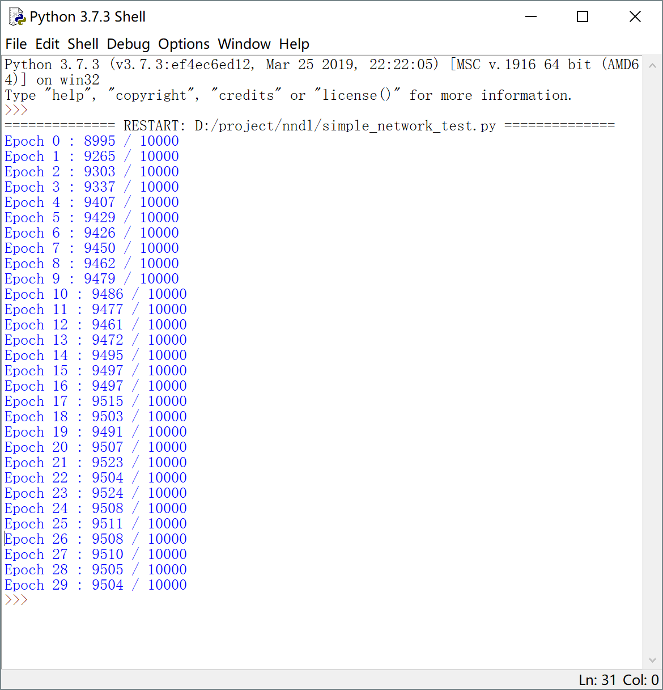

<!DOCTYPE html>
<html>
<head><meta name="generator" content="Hexo 3.8.0">
  <meta charset="utf-8">
  

  
  <title>NNDL | Hexo</title>
  <meta name="viewport" content="width=device-width, initial-scale=1, maximum-scale=1">
  <meta name="description" content="Neural Networks and Deep Learning前言本项目其实是笔者在大二小学期主要的工作，直到现在才想起要把它整理成博客，当时学NNDL的出发点是想将深度学习和VR结合起来，基于卡内基梅隆的openpose设计一个降低VR设备成本的深度学习算法（虽然最后该项目由于滤波难题不了了之了），总之感谢创院王飞龙老师提供的宝贵学习资料，更应该感谢本篇博客主要参考著作及作者：Neural">
<meta property="og:type" content="article">
<meta property="og:title" content="NNDL">
<meta property="og:url" content="http://yoursite.com/2019/04/30/NNDL/index.html">
<meta property="og:site_name" content="Hexo">
<meta property="og:description" content="Neural Networks and Deep Learning前言本项目其实是笔者在大二小学期主要的工作，直到现在才想起要把它整理成博客，当时学NNDL的出发点是想将深度学习和VR结合起来，基于卡内基梅隆的openpose设计一个降低VR设备成本的深度学习算法（虽然最后该项目由于滤波难题不了了之了），总之感谢创院王飞龙老师提供的宝贵学习资料，更应该感谢本篇博客主要参考著作及作者：Neural">
<meta property="og:locale" content="default">
<meta property="og:image" content="http://yoursite.com/2019/04/30/NNDL/p4.PNG">
<meta property="og:image" content="http://yoursite.com/2019/04/30/NNDL/p3.PNG">
<meta property="og:image" content="http://yoursite.com/2019/04/30/NNDL/p2.PNG">
<meta property="og:image" content="http://yoursite.com/2019/04/30/NNDL/p5.PNG">
<meta property="og:image" content="http://yoursite.com/2019/04/30/NNDL/p6.PNG">
<meta property="og:image" content="http://yoursite.com/2019/04/30/NNDL/p1.PNG">
<meta property="og:image" content="http://yoursite.com/2019/04/30/NNDL/p7.PNG">
<meta property="og:updated_time" content="2019-05-01T08:04:05.411Z">
<meta name="twitter:card" content="summary">
<meta name="twitter:title" content="NNDL">
<meta name="twitter:description" content="Neural Networks and Deep Learning前言本项目其实是笔者在大二小学期主要的工作，直到现在才想起要把它整理成博客，当时学NNDL的出发点是想将深度学习和VR结合起来，基于卡内基梅隆的openpose设计一个降低VR设备成本的深度学习算法（虽然最后该项目由于滤波难题不了了之了），总之感谢创院王飞龙老师提供的宝贵学习资料，更应该感谢本篇博客主要参考著作及作者：Neural">
<meta name="twitter:image" content="http://yoursite.com/2019/04/30/NNDL/p4.PNG">
  
    <link rel="alternate" href="/atom.xml" title="Hexo" type="application/atom+xml">
  
  
    <link rel="icon" href="/favicon.png">
  
  
    <link href="//fonts.googleapis.com/css?family=Source+Code+Pro" rel="stylesheet" type="text/css">
  
  <link rel="stylesheet" href="/css/style.css">
</head>
</html>
<body>
  <div id="container">
    <div id="wrap">
      <header id="header">
  <div id="banner"></div>
  <div id="header-outer" class="outer">
    <div id="header-title" class="inner">
      <h1 id="logo-wrap">
        <a href="/" id="logo">Hexo</a>
      </h1>
      
    </div>
    <div id="header-inner" class="inner">
      <nav id="main-nav">
        <a id="main-nav-toggle" class="nav-icon"></a>
        
          <a class="main-nav-link" href="/">Home</a>
        
          <a class="main-nav-link" href="/archives">Archives</a>
        
      </nav>
      <nav id="sub-nav">
        
          <a id="nav-rss-link" class="nav-icon" href="/atom.xml" title="RSS Feed"></a>
        
        <a id="nav-search-btn" class="nav-icon" title="Search"></a>
      </nav>
      <div id="search-form-wrap">
        <form action="//google.com/search" method="get" accept-charset="UTF-8" class="search-form"><input type="search" name="q" class="search-form-input" placeholder="Search"><button type="submit" class="search-form-submit">&#xF002;</button><input type="hidden" name="sitesearch" value="http://yoursite.com"></form>
      </div>
    </div>
  </div>
</header>
      <div class="outer">
        <section id="main"><article id="post-NNDL" class="article article-type-post" itemscope="" itemprop="blogPost">
  <div class="article-meta">
    <a href="/2019/04/30/NNDL/" class="article-date">
  <time datetime="2019-04-30T08:59:20.000Z" itemprop="datePublished">2019-04-30</time>
</a>
    
  </div>
  <div class="article-inner">
    
    
      <header class="article-header">
        
  
    <h1 class="article-title" itemprop="name">
      NNDL
    </h1>
  

      </header>
    
    <div class="article-entry" itemprop="articleBody">
      
        <h1 id="Neural-Networks-and-Deep-Learning"><a href="#Neural-Networks-and-Deep-Learning" class="headerlink" title="Neural Networks and Deep Learning"></a>Neural Networks and Deep Learning</h1><h2 id="前言"><a href="#前言" class="headerlink" title="前言"></a>前言</h2><p>本项目其实是笔者在大二小学期主要的工作，直到现在才想起要把它整理成博客，当时学NNDL的出发点是想将深度学习和VR结合起来，基于卡内基梅隆的openpose设计一个降低VR设备成本的深度学习算法（虽然最后该项目由于滤波难题不了了之了），总之感谢创院王飞龙老师提供的宝贵学习资料，更应该感谢本篇博客主要参考著作及作者：<strong>Neural Networks and Deep Learning —Michael Nielsen</strong> <a href="http://neuralnetworksanddeeplearning.com/index.html" target="_blank" rel="noopener">传送门</a>，以生动的语言，细致的描述，向笔者介绍了神经网络最深入的原理，和最宏观的视角！</p>
<h2 id="感知器（perceptron）–-一切的伊始"><a href="#感知器（perceptron）–-一切的伊始" class="headerlink" title="感知器（perceptron）– 一切的伊始"></a>感知器（perceptron）– 一切的伊始</h2><ul>
<li>多个二进制输入</li>
<li>权重</li>
<li>阈值</li>
<li>一个二进制输出</li>
</ul>
<p></p>
<p>一开始被证明可以成为一种逻辑部件（与，或，非门）</p>
<p>但他和硬件逻辑部件不同，是靠权重和偏置来实现的，而权重和偏置是可以通过程序调整的（他本身就是程序而非做死了的硬件），我们自然可以设计<strong>学习算法</strong>，使它响应外部的刺激，也就是<strong>自动计算</strong>+<strong>自主学习</strong></p>
<h2 id="S型神经元"><a href="#S型神经元" class="headerlink" title="S型神经元"></a>S型神经元</h2><p>学习算法的思想是通过计算输出和实际结果的误差，对权重和偏置做微小的调整，但是感知器无法做到这一点，因为它的输入或输出是非零即一的，他的输出函数是一个阶跃函数，不平滑，这意味着它计算出来的误差要么使其自身不变，要么完全反转</p>
<p>问题的关键在于平滑输出，这就引入了S型神经元</p>
<ul>
<li>多个[0,1]内的输入</li>
<li>权重</li>
<li>偏置</li>
<li>S型函数</li>
<li>一个[0,1]的输出</li>
</ul>
<p>这里的S型函数(sigmoid)定义为：</p>
<ul>
<li>当z趋于负无穷，输出为0</li>
<li>当z趋于正无穷，输出为1</li>
</ul>
<p>下面是S型函数的示意图：</p>
<p>于是我们解决了输出的微小变化计算问题：</p>
<h2 id="神经网络的架构"><a href="#神经网络的架构" class="headerlink" title="神经网络的架构"></a>神经网络的架构</h2><ul>
<li>输入层，输入神经元</li>
<li>隐藏层</li>
<li>输出层</li>
<li>前馈，递归（反馈回路，休眠到激活）</li>
</ul>
<p></p>
<p>另一些名称：多层感知器，MLP</p>
<h2 id="简单的手写数字网络"><a href="#简单的手写数字网络" class="headerlink" title="简单的手写数字网络"></a>简单的手写数字网络</h2><ul>
<li>输入层：28 * 28，[0,1]灰度值</li>
<li>隐藏层：15</li>
<li>输出层：10，一次表示判定为0,1,2…10的概率，取最大做最终结果</li>
</ul>
<p>原书提到这样一个很有意思的<strong>问题</strong>：我们为什么不同4个输出层神经元来编码表示结果，这样显得更加简洁？</p>
<p>原因如下：首先实验证明用10个更好，其次我们可以思考这样的启发式规则：分析每个神经元的工作，从输入的图像矩阵来讲，神经元可能更偏向于识别图像的某一部分（比如图像的左上角是否有一个圆弧），而如果我们换用4个输出层神经元，那么神经元的工作将转变为如何从输入图像取判别一个数字的最高位是什么，这显然对于前者更加复杂，看上去牵强不太可实现。</p>
<p><strong>注意</strong>：提及启发式规则，其实是我们根据结果为这样一种现象找的可能的解释，孟军教授经常和笔者说她的顾虑：目前深度学习有很好的结果，但它内部的原理，也就是这些神经元究竟干了什么具体的工作不可知，这一点有可能成为日后深度学习理论垮塌的隐患，希望读者也能时刻警醒着。</p>
<h2 id="梯度下降和随机梯度下降"><a href="#梯度下降和随机梯度下降" class="headerlink" title="梯度下降和随机梯度下降"></a>梯度下降和随机梯度下降</h2><p>注：本节公式推导非常多，由于markdown无法插入公式（用别的服务器插入往往会有网络问题），所以只给出大致想法，笔者非常推荐取阅读原著的p16-p18页。</p>
<p>二次代价函数（均方误差/MSE）：</p>
<p><strong>问题</strong>：为什么要用二次代价，而不直接使用正确分类的图像数量？</p>
<p>原因：我们对权重和偏置做出微小改变大多时候并不能改变正确分类的数量（这本质还是非一即零），而二次代价这样的平滑函数可以逐步取减小这样差距</p>
<p>现在我们只考虑如何使得这样一个多元函数取到最小：</p>
<ul>
<li>微积分：当极值点很多时显然已经失效</li>
<li>梯度下降：想象我们当前处于一个山谷的一点，我们想要向山谷走，牛顿可以帮助我们：我们躺下来让重力自动为我们导航。如果用数学的角度来思考这个问题，就是我们知道当前各元变量的值，也知道当前函数值，我们自然可以利用梯度（梯度的方向可以由偏导获得，我们可以自己再设置一个“学习速率”），让我们自动的向着最低值滚动，同时我们也将根据梯度和学习速率，确定我们下一个点的位置（各变元的值）</li>
</ul>
<p></p>
<p>随机梯度下降：</p>
<ul>
<li>对每个样本都做一遍计算会花费大量时间</li>
<li>选取小批量数据进行训练</li>
<li>权重和偏置每次的更新量同比缩小相应倍数（相当于减小了学习速率）</li>
<li>如此循环直到用完所有的输入称为完成一个训练迭代期（epoch）</li>
</ul>
<h2 id="反向传播基础"><a href="#反向传播基础" class="headerlink" title="反向传播基础"></a>反向传播基础</h2><p>注：于上一节相同，甚至本节的数学推到更多，由于本博客的偏重点在思想不在具体推导，不给出推导过程，但笔者非常推荐阅读原著的p37-p42</p>
<p>两个假设：</p>
<ul>
<li>代价函数可以被写成一个在每个训练样本x上的代价函数的均值：反向传播实际对每个<strong>独立</strong>的训练样本计算偏导，然后通过在所有训练样本上进行平均化</li>
<li>代价可以写成神经网络的输出函数：显然我们的二次代价函数满足这一条件（输出值为变元）</li>
</ul>
<p>误差的定义和意义：</p>
<ul>
<li>代价函数对第l层第j个神经元输出的偏导</li>
<li>如果我们能通过代价函数直接调整上述神经元的权重和偏置，那么<strong>自主学习</strong>的问题就解决了</li>
</ul>
<p>四个基本方程：</p>
<ul>
<li>输出层误差的方程</li>
<li>使用下一层误差来表示当前层误差</li>
<li>代价函数关于网络中偏置的改变率</li>
<li>代价函数关于任何一个权重的改变率</li>
</ul>
<p>对应公式：</p>
<h2 id="反向传播算法"><a href="#反向传播算法" class="headerlink" title="反向传播算法"></a>反向传播算法</h2><p>1.输入x：为输入层设置对应的激活值a1</p>
<p>2.前向传播：对每层计算z和a</p>
<p>3.计算输出层误差</p>
<p>4.反向误差传播：逐层反向计算误差</p>
<p>5.梯度下降：根据每层的误差和a更新权重和偏置</p>
<h2 id="反向传播的效率"><a href="#反向传播的效率" class="headerlink" title="反向传播的效率"></a>反向传播的效率</h2><p>为了计算代价函数对某个权重的偏导，如果我们用普通的思想，我们针对该权重赋予一个很小的误差（目的是为了求出偏导），那么对于超高维的权重就要做相应次数的前向传播，这显然是非常低效的</p>
<p>反向传播确保我们<strong>同时计算</strong>偏导，只需要一次前向传播和一次反向传播，这样每层获得了误差矩阵，每层利用其同时对权重偏置进行更新</p>
<h2 id="再看反向传播"><a href="#再看反向传播" class="headerlink" title="再看反向传播"></a>再看反向传播</h2><p>由于时间问题，暂时不作讨论，其实本节内容远重要于上述的理论部分，心存高远的读者可以仔细去阅读原著的p46-p49页，探索如何发现并总结出这样的理论</p>
<h2 id="简单神经网络的python实现"><a href="#简单神经网络的python实现" class="headerlink" title="简单神经网络的python实现"></a>简单神经网络的python实现</h2><p>使用Python3.7.3实现，程序非常简单，故没有添加注释，完全按照上面的理论方法来实现，分段解释可能影响整体感，这里只给出部分的内置和np函数接口：</p>
<ul>
<li>np.random.rand(a, b)：返回一个a行b列的矩阵，且元素值满足标准正态分布</li>
<li>zip(a,b,…):将对象中相应元素打包成元组，然后返回元组的列表</li>
<li><p>np.argmax():对一维输入返回最大值的索引</p>
<pre><code>import random
import numpy as np

class Network(object):

    def __init__(self, sizes):
        self.num_layers = len(sizes)
        self.sizes = sizes
        self.biases = [np.random.randn(y, 1) for y in sizes[1:]]
        self.weights = [np.random.randn(y, x)
                        for x, y in zip(sizes[:-1], sizes[1:])]

    def feedforward(self, a):
        for b, w in zip(self.biases, self.weights):
            a = sigmoid(np.dot(w, a) + b)
        return a

    def SGD(self, training_data, epochs, mini_batch_size, eta, test_data=None):
        if test_data:
            test_data = list(test_data)
            n_test = len(test_data)
        training_data = list(training_data)
        n = len(training_data)
        for i in range(epochs):
            random.shuffle(training_data)
            mini_batches = [training_data[k:k + mini_batch_size]
                            for k in range(0, n, mini_batch_size)]
            for mini_batch in mini_batches:
                self.update_mini_batch(mini_batch, eta)
            if test_data:
                print(&quot;Epoch {0} : {1} / {2}&quot;.format(i, self.evaluate(test_data)
                                                    , n_test))
            else:
                print(&quot;Epoch {0} complete&quot;.format(i))

    def update_mini_batch(self, mini_batch, eta):
        nabla_b = [np.zeros(b.shape) for b in self.biases]
        nabla_w = [np.zeros(w.shape) for w in self.weights]
        for x, y in mini_batch:
            delta_nabla_b, delta_nabla_w = self.backprop(x, y)
            nabla_b = [nb + dnb for nb, dnb in zip(nabla_b, delta_nabla_b)]
            nabla_w = [nw + dnw for nw, dnw in zip(nabla_w, delta_nabla_w)]
        self.weights = [w - (eta/len(mini_batch)) * nw
                        for w, nw in zip(self.weights, nabla_w)]
        self.biases = [b - (eta/len(mini_batch)) * nb
                        for b, nb in zip(self.biases, nabla_b)]

    def backprop(self, x, y):
        nabla_b = [np.zeros(b.shape) for b in self.biases]
        nabla_w = [np.zeros(w.shape) for w in self.weights]
        activation = x
        activations = [x]
        zs = []
        for b, w in zip(self.biases, self.weights):
            z = np.dot(w, activation) + b
            zs.append(z)
            activation = sigmoid(z)
            activations.append(activation)
        delta = self.cost_derivative(activations[-1], y) * sigmoid_prime(zs[-1])
        nabla_b[-1] = delta
        nabla_w[-1] = np.dot(delta, activations[-2].transpose())
        for l in range(2, self.num_layers):
            z = zs[-l]
            sp = sigmoid_prime(z)
            delta = np.dot(self.weights[-l + 1].transpose(), delta) * sp
            nabla_b[-l] = delta
            nabla_w[-l] = np.dot(delta, activations[-l-1].transpose())
        return (nabla_b, nabla_w)

    def cost_derivative(self, output_activations, y):
        return (output_activations - y)

    def evaluate(self, test_data):
        test_results = [(np.argmax(self.feedforward(x)), y)  
                        for (x, y) in test_data]
        return sum(int(x == y) for (x, y) in test_results)

def sigmoid(z):
    return 1.0/(1.0 + np.exp(-z))

def sigmoid_prime(z):
    return sigmoid(z) * (1 - sigmoid(z))
</code></pre></li>
</ul>
<p>结果截图：</p>
<h2 id="改进方法"><a href="#改进方法" class="headerlink" title="改进方法"></a>改进方法</h2>
      
    </div>
    <footer class="article-footer">
      <a data-url="http://yoursite.com/2019/04/30/NNDL/" data-id="cjv4xruvu0000kguppdzy4jxh" class="article-share-link">Share</a>
      
      
    </footer>
  </div>
  
    
<nav id="article-nav">
  
  
    <a href="/2019/04/30/co-occurrence/" id="article-nav-older" class="article-nav-link-wrap">
      <strong class="article-nav-caption">Older</strong>
      <div class="article-nav-title">co-occurrence</div>
    </a>
  
</nav>

  
</article>

</section>
        
          <aside id="sidebar">
  
    
  <div class="widget-wrap">
    <h3 class="widget-title">Categories</h3>
    <div class="widget">
      <ul class="category-list"><li class="category-list-item"><a class="category-list-link" href="/categories/algorithm/">algorithm</a></li><li class="category-list-item"><a class="category-list-link" href="/categories/cppdetails/">cppdetails</a></li><li class="category-list-item"><a class="category-list-link" href="/categories/project-record/">project record</a></li><li class="category-list-item"><a class="category-list-link" href="/categories/scientific-research/">scientific research</a></li></ul>
    </div>
  </div>


  
    
  <div class="widget-wrap">
    <h3 class="widget-title">Tags</h3>
    <div class="widget">
      <ul class="tag-list"><li class="tag-list-item"><a class="tag-list-link" href="/tags/CG/">CG</a></li><li class="tag-list-item"><a class="tag-list-link" href="/tags/FS/">FS</a></li><li class="tag-list-item"><a class="tag-list-link" href="/tags/NLP/">NLP</a></li><li class="tag-list-item"><a class="tag-list-link" href="/tags/bioinformatics/">bioinformatics</a></li><li class="tag-list-item"><a class="tag-list-link" href="/tags/compiler/">compiler</a></li><li class="tag-list-item"><a class="tag-list-link" href="/tags/cpp/">cpp</a></li><li class="tag-list-item"><a class="tag-list-link" href="/tags/malloc/">malloc</a></li><li class="tag-list-item"><a class="tag-list-link" href="/tags/memory-management/">memory management</a></li><li class="tag-list-item"><a class="tag-list-link" href="/tags/new/">new</a></li><li class="tag-list-item"><a class="tag-list-link" href="/tags/project/">project</a></li><li class="tag-list-item"><a class="tag-list-link" href="/tags/python/">python</a></li><li class="tag-list-item"><a class="tag-list-link" href="/tags/python-data-processing/">python data processing</a></li><li class="tag-list-item"><a class="tag-list-link" href="/tags/roughset/">roughset</a></li></ul>
    </div>
  </div>


  
    
  <div class="widget-wrap">
    <h3 class="widget-title">Tag Cloud</h3>
    <div class="widget tagcloud">
      <a href="/tags/CG/" style="font-size: 10px;">CG</a> <a href="/tags/FS/" style="font-size: 10px;">FS</a> <a href="/tags/NLP/" style="font-size: 10px;">NLP</a> <a href="/tags/bioinformatics/" style="font-size: 10px;">bioinformatics</a> <a href="/tags/compiler/" style="font-size: 10px;">compiler</a> <a href="/tags/cpp/" style="font-size: 10px;">cpp</a> <a href="/tags/malloc/" style="font-size: 10px;">malloc</a> <a href="/tags/memory-management/" style="font-size: 10px;">memory management</a> <a href="/tags/new/" style="font-size: 10px;">new</a> <a href="/tags/project/" style="font-size: 20px;">project</a> <a href="/tags/python/" style="font-size: 10px;">python</a> <a href="/tags/python-data-processing/" style="font-size: 10px;">python data processing</a> <a href="/tags/roughset/" style="font-size: 10px;">roughset</a>
    </div>
  </div>

  
    
  <div class="widget-wrap">
    <h3 class="widget-title">Archives</h3>
    <div class="widget">
      <ul class="archive-list"><li class="archive-list-item"><a class="archive-list-link" href="/archives/2019/04/">April 2019</a></li><li class="archive-list-item"><a class="archive-list-link" href="/archives/2019/03/">March 2019</a></li></ul>
    </div>
  </div>


  
    
  <div class="widget-wrap">
    <h3 class="widget-title">Recent Posts</h3>
    <div class="widget">
      <ul>
        
          <li>
            <a href="/2019/04/30/NNDL/">NNDL</a>
          </li>
        
          <li>
            <a href="/2019/04/30/co-occurrence/">co-occurrence</a>
          </li>
        
          <li>
            <a href="/2019/04/16/computer-graphics/">computer_graphics</a>
          </li>
        
          <li>
            <a href="/2019/04/13/meteorological_data_analysis/">meteorological data analysis</a>
          </li>
        
          <li>
            <a href="/2019/03/29/roughset/">roughset</a>
          </li>
        
      </ul>
    </div>
  </div>

  
</aside>
        
      </div>
      <footer id="footer">
  
  <div class="outer">
    <div id="footer-info" class="inner">
      &copy; 2019 John Doe<br>
      Powered by <a href="http://hexo.io/" target="_blank">Hexo</a>
    </div>
  </div>
</footer>
    </div>
    <nav id="mobile-nav">
  
    <a href="/" class="mobile-nav-link">Home</a>
  
    <a href="/archives" class="mobile-nav-link">Archives</a>
  
</nav>
    

<script src="//ajax.googleapis.com/ajax/libs/jquery/2.0.3/jquery.min.js"></script>


  <link rel="stylesheet" href="/fancybox/jquery.fancybox.css">
  <script src="/fancybox/jquery.fancybox.pack.js"></script>


<script src="/js/script.js"></script>


  </div>
</body>
</html>